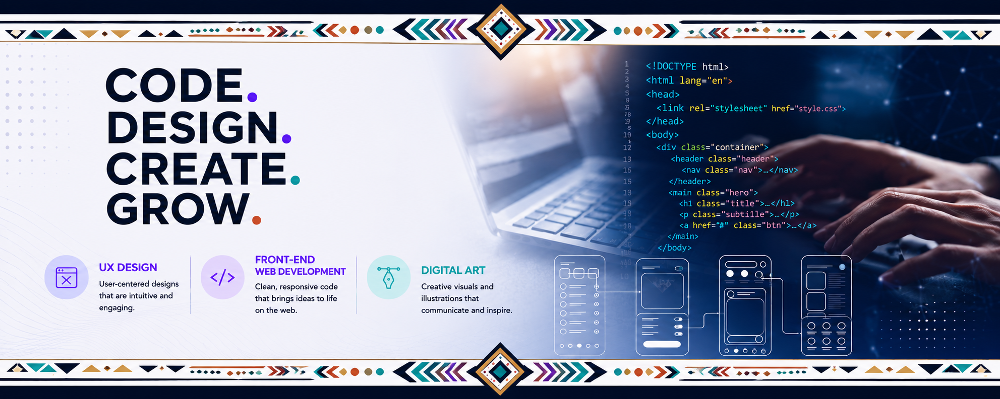

Portfolio
UX-Designer, Front-End Website Designs, and Digital Marketer
I'm an aspiring UX Designer with a passion for creating intuitive, accessible, and meaningful digital experiences that put people first. My background in recruitment, administration, education, and marketing has strengthened my ability to understand user needs, conduct research, solve complex problems, and communicate effectively with diverse audiences.
Through the IndigiTECH Mentorship Program, I developed practical skills in UX design, web development, digital art, and business while gaining hands-on experience with the complete design process, from user research and persona development to wireframing, prototyping, and designing in Figma.
I'm passionate about creating digital experiences that are inclusive, accessible, and visually engaging while developing solutions that make a positive impact for users and communities.
Explore my work to see how I bring technical ideas to life!